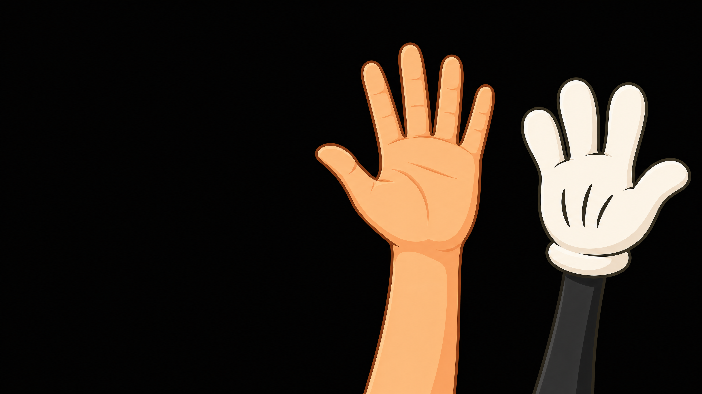

why do we count to ten?
image: ai-generated (gpt-image-2)
what 123 really says
every place carries a power of ten.
the eight-finger creature writes 123
same recipe. different base. different number.
and a creature with two flippers?
image: ai-generated (gpt-image-2)
two flippers: counting in binary
the dolphin writes 110
nothing new. the third time is the same trick.
why two, of all things?
two states are the cheapest thing you can build reliably.
eight bits make a byte
256 values, and every one of them is a place value sum.
try it: eight switches, one number
hex: four bits at a time
hex is not a new number world. it is a reading aid.
try it: the same file, twice
two ladders of units
the missing 69 gigabytes
nobody cheated. two ladders, one word.
you built one already
k colours are k digits, and position matters.
ten was never special.
it is the number of fingers on two hands, and nothing else.